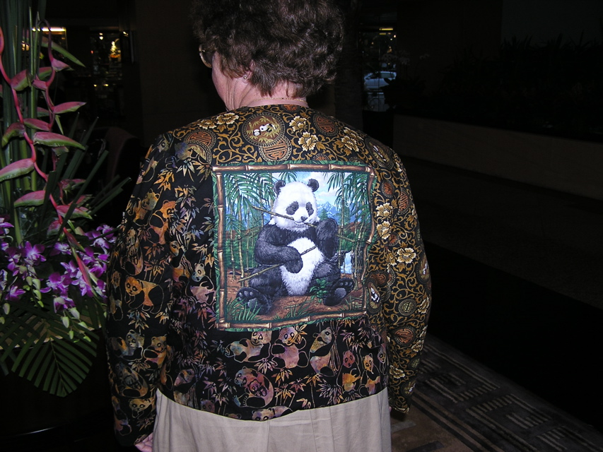

<--Previous Up Next-->

Panda jacket back
This jacket was made for a recent trip to the Yunnan province of China which included a visit to the panda sanctuary near Chengdu, the capital of Sichuan Province. The idea started with what was sold as a pillow panel showing a panda eating bamboo, its favorite food. This became the center of the back.